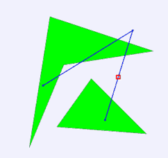

在设计航线的时候，安全是一个很重要的问题。首先，最重要的是应采取一切措施确保飞行不会发生任何事故
，但同时也需要做好最坏的打算，一旦事故发生，就要确保乘客有尽量高的生还几率。当飞机迫降到海上的时候，
最近的陆地就是一个关键的因素。航线中最危险的地方就是距离最近的陆地最远的地方，我们称这种点为这条航线
“孤地点”。孤地点到最近陆地的距离被称为“孤地距离”。作为航空公司的高级顾问，你接受的第一个任务就是
尽量找出一条航线的孤地点，并计算这条航线的孤地距离。为了简化问题，我们认为地图是一个二维平面，陆地可
以用多边形近似，飞行线路为一条折线。航线的起点和终点都在陆地上，但中间的转折点是可能在海上（如下图所
示，方格标示出了孤地点）。
